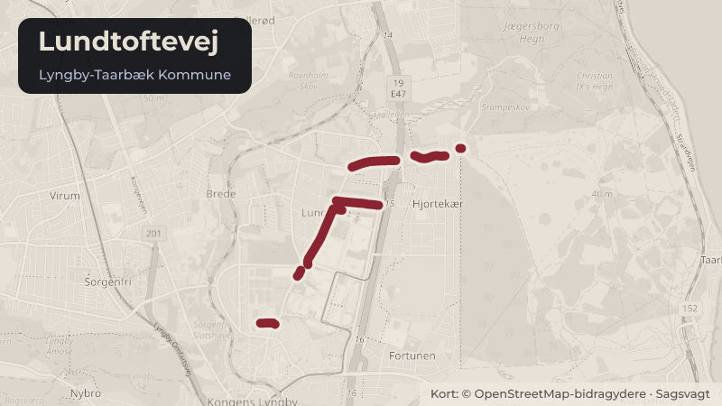

På dagsordenen 1. december, Teknik- og Miljøudvalget, Lyngby-Taarbæk
Skolevejsprojekter 2027 - Anlægsbevilling og prioritering af projekter
Skoler og børnBudget og økonomi

Kort fortalt
- Hvem
- Teknik- og Miljøudvalget, Lyngby-Taarbæk Kommune
- Hvornår
- Tirsdag 1. december 2026
- Status
- På dagsordenen. Sagen behandles på mødet.
- Næste skridt
- Forvaltningen vil gå i dialog med skoleledelsen vedr. projekt på Kongsvænget for at undersøge tiltag, der kan gennemføres inden for den økonomiske ramme, til forbedring af trygheden på vejen.
Er noget forkert her? Skriv til os
Hvad kan du gøre?
- Skriv til politikerne
- Udvalgets møder er lukkede, men du kan skrive til medlemmerne før mødet tirsdag 1. december 2026. Du finder dem på ltk.dk.
Læs hele sagen Kommunens egen tekst
Indstilling
Forvaltningen foreslår, at:
1. der gives en anlægsbevilling på 1,53 mio. kr. til at gennemføre tre skolevejsprojekter i
prioriteret rækkefølge i 2027, finansieret af det afsatte rådighedsbeløb på
anlægsprojektet "Mindre tiltag på skoleveje" i 2027 under de i økonomiafsnittet nævnte
forudsætninger,
2. der arbejdes videre med at kvalificere mulige trafiksikkerhedsløsninger i krydsene
Sorgenfrigårdsvej/Lyngbygårdsvej og Sorgenfrigårdsvej/Carlshøjvej
Problemstilling
Med afsæt i Trafiksikkerhedsplanen 2023-2027 har forvaltningen gennemgået de relevante
trafiksikkerheds- og skolevejsprojekter med henblik på at vurdere, hvilke projekter der kan
realiseres inden for den afsatte anlægsbevilling. Forvaltningen har desuden set på, om der er
kommet nye lokaliteter til, som kræver opmærksomhed i forhold til skoleveje.
Bilaget indeholder en status på projekterne fra Trafiksikkerhedsplanen 2023-2027 samt på de
skolevejsprojekter, der blev besluttet i 2022, før trafiksikkerhedsplanen blev udarbejdet (bilag 1
Kongevejen, Bredevej og Bredesvinget - skolevejsprojekt
I genfremstilling af sagen "Kongevejen, Bredevej og Bredesvinger - skolevejsprojekt", som
behandles i indeværende udvalgssagsrunde, foreslår forvaltningen, at projektet frafaldes og
der sker en samlet prioritering af projekter i denne sag for 2027.
På den baggrund foreslår forvaltningen, at der arbejdes videre med forbedringer på
Kongsvænget, som ligger tættere på Kongevejens skole, så flere skoleelever får glæde af
tiltagene. Forvaltningen har været i dialog med skolen, som ser positivt på et projekt, der kan
forbedre forholdene på Kongsvænget. Skolen og forældre oplever flere udfordringer, som
skaber utryghed på skolevejen. Det gælder blandt andet ulovlig parkering og mange biler om
morgenen, hvor nogle forældre standser og sætter børn af uhensigtsmæssige steder.
Kulsviervej
Forvaltningen har fået flere henvendelser om påkørsler eller nærved-ulykker i fodgængerfeltet
på Kulsviervej i krydset med Lystoftevej og Finlandsvej. Der er desuden registreret to ulykker i
2025 med fodgængere i krydset. Det opleves at fodgængerfeltet ikke respekteres af bilister,
der ikke holder tilbage eller overser fodgængere, der opleves høj fart samt der er et ønske om
bedre oversigtsforhold. Forvaltningen vurderer, at situationen har ændret sig til det værre og
foreslår derfor, at der gøres noget ved denne lokalitet, så det bliver mere sikkert og trygt at
krydse i fodgængerfeltet.
Sorgenfrigårdsvej
Forvaltningen har genbesøgt projekt nr. 6 og 13 fra Trafiksikkerhedsplanen (Teknik- og
miljøudvalget d. 28. oktober 2025, sag 10) ved at have fået gennemført en trafikal
undersøgelse og ulykkesanalyse af de to vigepligtsregulerede kryds på Sorgenfrigårdsvej:
Sorgenfrigårdsvej/Lyngbygårdsvej (projekt nr. 6 i Trafiksikkerhedsplanen)
Sorgenfrigårdsvej/Carlshøjvej (projekt nr. 13 i Trafiksikkerhedsplanen)
Trafikundersøgelsen er lavet for at gå mere i dybden med, hvilke løsningsmuligheder der kan
være i krydsene for at forbedre trafiksikkerheden, krydsningspunkter og den oplevede tryghed.
Begge kryds formodes at benyttes på skolevejen til Lindegårdsskolen fra områderne øst for
Sorgenfrigårdsvej. Der er dog observeret flest krydsende cyklister og gående ved Carlshøjvej.
Lindegårdsskolen er aktuelt genhuset i en toårig periode. Det er derfor ikke muligt at
gennemføre en nærmere undersøgelse af, hvilket af de to kryds skolebørnene normalt
benytter.
Analysen af krydset Sorgenfrigårdsvej/Lyngbygårdsvej har afventet at letbanen kom i drift, jf.
projekt nr. 6 i Trafiksikkerhedsplanen. Ulykkesanalysen viser ifølge trafiknotatet, at der inden
for en femårig periode er registreret flere ulykker i krydset Sorgenfrigårdsvej/Lyngbygårdsvej.
Krydset vil kunne udpeges som en ulykkeslokalitet, da der er registreret mere end fem
personskade- og materielskadeulykker i perioden. Det vil sige at dette kryds er blevet et af de
mest ulykkesbelastede kryds i kommunen.
Der er desuden modtaget borgerhenvendelser om utryghed og trafikale udfordringer i krydset,
herunder opstuvning som følge af krydsets placering tæt på
Klampenborgvej/Sorgenfrigårdsvej. Trafiknotatet peger på mulige løsninger for at forbedre
trafiksikkerheden og krydsningen af Sorgenfrigårdsvej i begge krydsningspunkter (bilag 2).
Løsninger
Efter gennemgang af projekter i Trafiksikkerhedsplanen 2023-27 og undersøgelse af nye
lokaliteter på baggrund af uheld og henvendelser foreslår forvaltningen af gennemføre
nedenstående projekter i prioriteret rækkefølge:
1. Tryggere skolevej på Kongsvænget i samarbejde med Kongevejens Skole med
udgangspunkt i projekt nr. 24 i Trafiksikkerhedsplanen 2023-2027,
Den estimerede udgift til projektet er på mellem 0,7 og 1,2 mio. kr.
2. Fartdæmpning, gule blink (torontoanlæg) og bedre oversigtsforhold ved fodgængerfeltet
på Kulsviervej i krydset med Lystoftevej og Finlandsvej,
Den estimerede udgift til projektet er på ca. 0,3 mio. kr.
3. Yderligere fartdæmpning på Lundtoftevej øst for Helsingørmotorvejen, med afsæt i
projekt nr. 10 i Trafiksikkerhedsplanen 2023-2027
Den estimere udgift til projekter er på mellem 0,5 og 0,6 mio. kr.
Derudover foreslår forvaltningen at krydsene på Sorgenfrigårdsvej bliver yderligere kvalificeret
for senere prioritering.
Kongsvænget ved Kongevejens Skole - nye tiltag, men med afsæt i projekt nr. 24
Forvaltningen anbefaler at indsatsen i 2027 placeres tættere på skolen og tager udgangspunkt
i projekt nr. 24 på Kongsvænget frem for at gennemføre den hævede flade på Bredevej ved
Kongevejen og Bredesvinget, se også sag under punkt 14.
Skolevejsprojektet på Kongsvænget vil tage udgangspunkt i projekt nr. 24 fra
trafiksikkerhedsplanen, som er et større projekt for at forbedre skolevejen på Kongsvænget til
Kongevejens Skole. På grund af prisstigninger på anlægsprojekter vurderes det ikke muligt at
gennemføre hele projekt nr. 24 inden for den afsatte økonomiske ramme. Det er derfor ikke
planlagt konkret, hvilke tiltag der indenfor den foreslåede økonomi kan gennemføres.
Derfor foreslår forvaltningen at gå i dialog med skolen om en tilpasset løsning, der inden for
den givne rammen kan forbedre adgangsforholdene og øge trygheden for selvtransporterende
elever ved ankomsten til skolen. Med inspiration fra projektet Skoleelever som trafikeksperter
ved Hummeltofteskolen, vil der ses på, hvilke tiltag der kan gennemføres på Kongsvænget
inden for den økonomiske ramme.
Forvaltningen modtager henvendelser om, at parkering og afsætning skaber uoverskuelige og
utrygge forhold på Kongsvænget om morgenen. Der er allerede indkørselsforbud fra Bredevej
til Kongsvænget mellem 7.30 – 8.30, men der er ønske om yderligere at begrænse biltrafikken,
for at gøre det mere trygt for de cyklende og gående skolebørn.
Som alternativ til de foreslåede tiltag på Kongsvænget kan det besluttes at gennemføre den
hævede flade i krydset mellem Kongevejen, Bredevej og Bredesvinget. Den hævede flade skal
reducere hastigheden for biler, der drejer fra Kongevejen ind på Bredevej, og forbedre
mulighederne for at krydse vejen. Hvis denne løsning ønskes fastholdt, skal projektet med den
hævede flade ikke frafaldes under punkt 6, ”Kongevejen, Bredevej og Bredesvinget –
skolevejsprojekt”.
Kulsviervej - nyt projekt pga. flere uheld i krydsningen
Forvaltningen foreslår, at der etableres gult blink (torontoanlæg), pudebump eller anden
fartdæmpning med henblik på at dæmpe bilernes hastighed frem mod fodgængerfeltet samt
undersøge, hvordan oversigtsforholdene kan forbedres. Dette forslag er ikke med i
trafiksikkerhedsplanen 2023-2027.
Lundtoftevej øst for Helsingørmotorvejen - projekt nr. 10
Hvis der er økonomisk råderum efter projekt på Kongsvænget og Kulsviervej er gennemført vil
projekt nr. 10 fra trafiksikkerhedsplanen blive gennemført. Projektet er yderligere fartdæmpning
af Lundtoftevej øst for Helsingørmotorvejen, det vil sige mellem Vejporten og Hjortekærsvej.
Krydsene på Sorgenfrigårdsvej - projekt nr. 6 og 13
Forvaltningen foreslår, at de mulige løsninger i trafiknotatet kvalificeres yderligere i 2027.
Arbejdet skal blandt andet belyse løsningernes trafikale effekt og økonomi, så projekterne kan
indgå i en senere prioritering af projekter. Anlægges der udelukkende to pudebump i et
afmærket fartdæmpet område med en anbefalet hastighed på 40 km/t er et groft anlægsskøn
ca. 0,14 mio. kr. Et sådan tiltag vurderes at have en marginal effekt på at forbedre krydsningen
for bløde trafikanter, hvis det ses isoleret som tiltag.
Strategisk ramme
Trafiksikkerhedsplanen underbygger Lyngby-Taarbæk Kommunes arbejde med trafiksikkerhed
og sikre skoleveje og er koordineret med indsatser i cykelstrategi og cykelhandlingsplan.
Økonomi
Forvaltningen foreslår, at der gives en anlægsbevilling på 1,5 mio. kr. til gennemførsel af de
indstillede skolevejsprojekter i 2027. De gennemføres i prioriteret rækkefølge, med forbehold
for at anlægsbevillingen ikke rækker til alle indstillede projekter. Udgiften til projektet vedr.
tryggere skolevej på Kongsvænget er estimeret til mellem 0,7 og 1,2 mio. kr., udgiften til
projektet vedr. fodgængerfeltet på Kulsviervej er estimeret til ca. 0,3 mio. kr. og udgiften til
projektet vedr. Lundtoftevej estimeret til mellem 0,5 og 0,6 mio. kr. Der er ved alle tre projekter
tale om et groft estimat af udgifterne.
Anlægsbevillingen gives under forudsætning af, at sagen "Kongevejen, Bredevej og
Bredesvinger - Skolevejsprojekt", der behandles i indeværende udvalgssagsrunde,
godkendes.
t. kr. i 2026 p/l
Udvalg /
Aktivitetsområde
Varig?
ja/nej
Mindre tiltag på
Økonomiudvalget /
skoleveje
anlæg
Mindre tiltag på
Økonomiudvalget /
skoleveje 2027
(Nyt
anlæg
bevillingsprogram)
I alt
Nej
Nej
Videre proces
Forvaltningen vil gå i dialog med skoleledelsen vedr. projekt på Kongsvænget for at undersøge
tiltag, der kan gennemføres inden for den økonomiske ramme, til forbedring af trygheden på
vejen.
Forvaltningen igangsætter anlægsprojekterne, når de er detailplanlagt.
Hvis det ønskes at beslutte andre projekter fra Trafiksikkerhedsplanen end de anbefalede, skal
forvaltningen tilbage og vurdere hvilke projekter, der er mulige at gennemføre inden for
rådighedsbeløbet i 2027.
Kilde: Lyngby-Taarbæk Kommune, Teknik- og Miljøudvalget, dagsorden fra mødet tirsdag 1. december 2026, punkt 6. Læs den originale sag hos kommunen.
Steder i sagen: Lundtoftevej